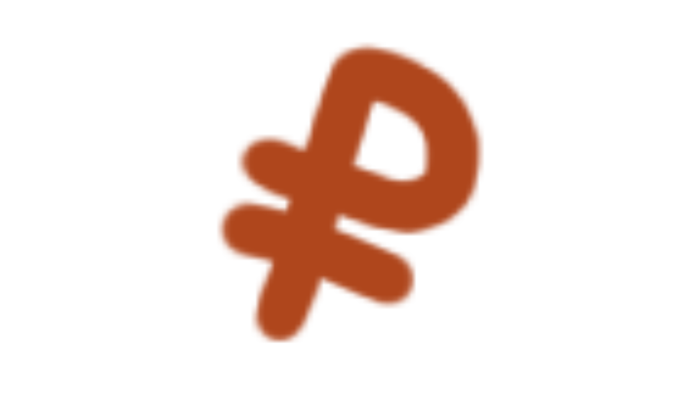
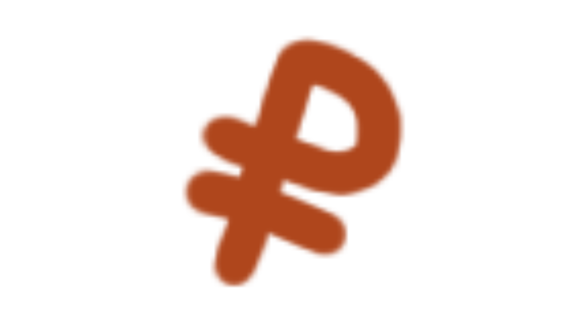

График показывает, что с 2016 по 2021 год расходы на НИОКР стабильно составляли около 1,1% от ВВП.
о в 2022 году произошло снижение показателя до 1,0% — это первый заметный спад за рассматриваемый период.
С 2023 по 2026 год уровень расходов на НИОКР остаётся на отметке 1,0%, без существенных колебаний.
Динамика расходов на НИОКР в России демонстрирует стабильность с небольшим спадом, но остаётся ниже среднемирового уровня. Основной источник финансирования — государственный бюджет, доля частных инвестиций остаётся относительно низкой.
Интересный факт:
Россия занимает примерно 34-е место в мировом рейтинге по доле расходов на НИОКР в ВВП.
 
